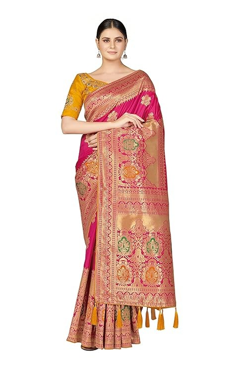
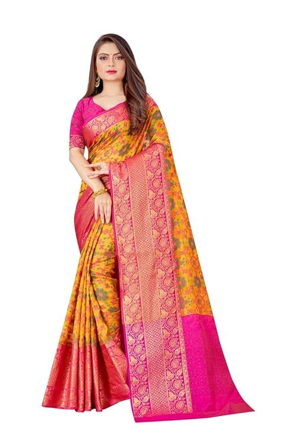
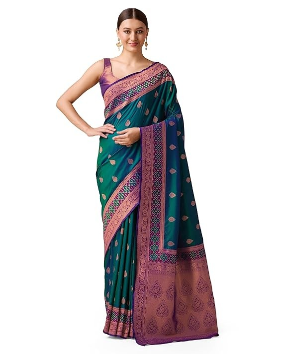

Banarasi Silk
Madhura Fashion Women's Banarasi Silk Blend Woven Work Tussles Saree.
View details

Kanjivaram banarasi silk
Madhura Fashion Women's kanjivaram banarasi silk saree for partywear,Fastival,Wedding silk with rich pallu Design sarees.
View details

Banarasi Silk
Madhura Fashion Women's Elegant Banarasi Sik Saree with Intricate Zari Work with Rich Brocade Patterns.
View details